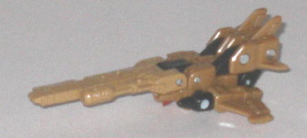
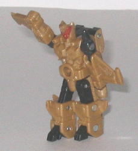
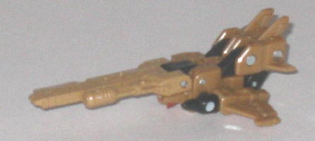
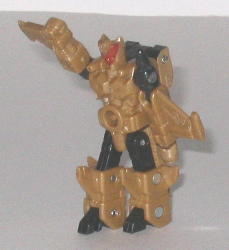
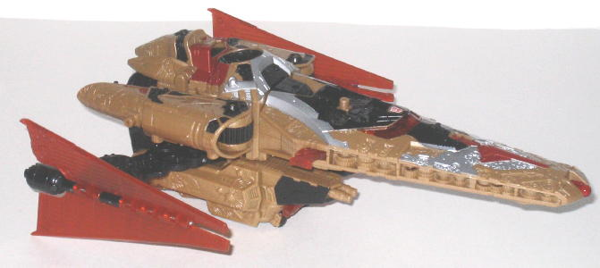
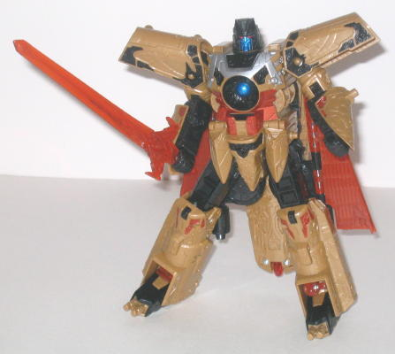

Safeguard
Safeguard
 
Allegiance : Minicon
Size : Mini-Con
Difficulty of Transformation : Very Easy
Color Scheme : Dull light goldish tan, black, and some dull metallic red
Rating : 6.4
(NOTE: Because this set is a repaint, this
is not a full-blown review. This mainly covers any changes made to the
set and the color scheme, and merely compares it to the original Vector
Prime w/ Safeguard. For a review on the mold itself, read the review of
the original Vector Prime w/ Safeguard
here
.)
Safeguard


Allegiance
: Minicon
Size
: Mini-Con
Difficulty of Transformation
: Very
Easy
Color Scheme
: Dull light goldish
tan, black, and some dull metallic red
Rating
: 6.4
Vector Prime's personal
Minicon Safeguard has a color scheme that is a simplified version of Vector
Prime's himself, just like on the original version. The dull golden tan
isn't my favorite color, but it's by no means particularly ugly, and it
doesn't clash with black, Safeguard's secondary color. My main complaint
with Safeguard has to do with his lack of paint apps-- his forehead and
face are painted a nice shade of red, but other than that Safeguard doesn't
have any paint apps to speak of. I understand that Vector Prime should
take priority over his Minicon when it comes to looking good, but still...
just two or so more paint apps would have gone a long way.
No mold changes have
been made to Galaxy Force Safeguard.
 Vector
Prime
Vector
Prime


Allegiance
: Autobot
Size
: Voyager (Mega)
Homeworld
: None
Cyber Key Code
: vz74
Difficulty of Transformation
: Easy
Color Scheme
: Dull light goldish
tan, black, transparent orange, and some silver, dull metallic orange,
light red, and dark metallic blue
Rating
: 9.1
The idea behind the Galaxy
Force upgraded version of Vector Prime-- named after the Japanese version
of Cybertron, which is called Galaxy Force-- is that the colors are based
off of the original computer animation model Hasbro recieved for Vector
Prime in the TV show. They weren't sure why, but the animators in Japan
had colored their model a dull brown and black for this computer animation
"test shot", so Hasbro decided to use that for inspiration for this repaint.
Unfortunately, though the color scheme as a whole was fairly well thought-out,
the dull goldish tan used as the primary color just isn't all that great
of a shade, it looks too plain and "unclean" for an ancient master of time
and space like Vector Prime. The black, Vector Prime's secondary color,
does go very well with it, however, and the metallic and transparent orange
looks very good against the black as well, though I wish it was just a
tad darker so it would show more contrast against the goldish tan. The
same goes for the silver, as well-- it contrasts very well witht he black,
but it's too light to provide much contrast against the tan. Maybe using
more black and less tan would have made the toy look a bit better. The
dark metallic blue used for Vector Prime's face and bulb in his chest is
a very eye-catching color, though, and is probably the best-looking shade
on the figure.
No mold changes have
been made to Galaxy Force Vector Prime.
Galaxy Force Vector Prime & Safeguard are interesting ideas for repaints, with an interesting story behind their color scheme, but ultimately they don't work as well for the toy as the lighter, more "holier" colors of the original release. The original official pictures of the toy showed Vector Prime being covered in a very shiny metallic gold color, similar in shiny-ness to Cybertron Galvatron's silver, but unfortunately it was shown that that photo was waaay over-doctored. It's a shame, as if Galaxy Force had come out in that shiny gold color, he would have defintiely surpassed the original in terms of looks. As it is, he falls short-- I recommend the original release over this one.
Review by Beastbot